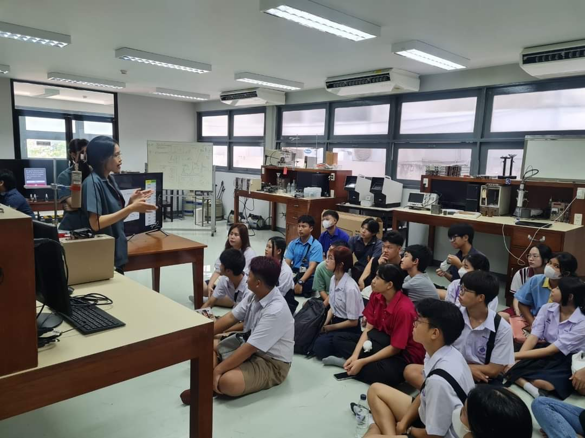
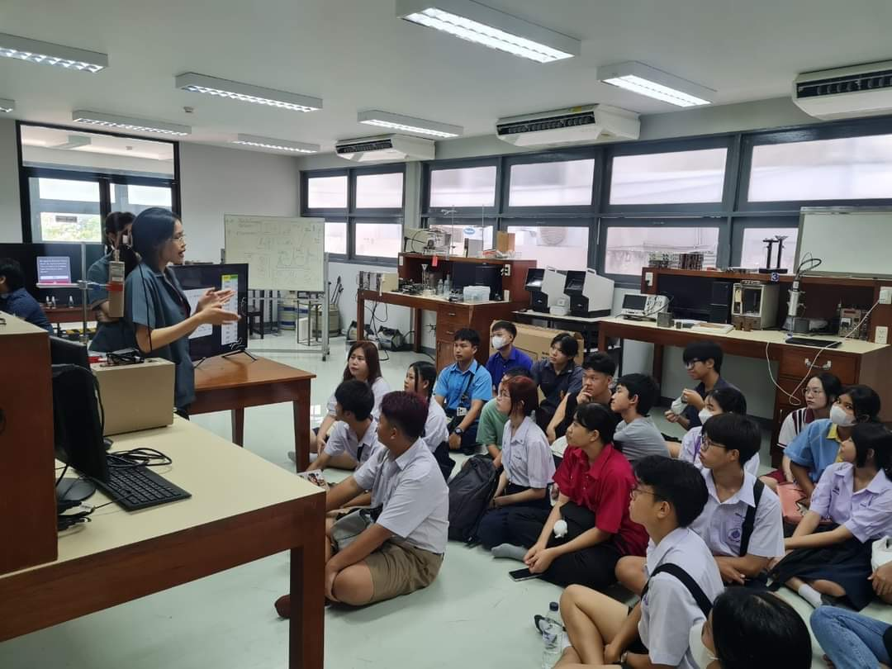

Senior Project (In progress)
Liquid level and volume measurement systems using radiation transmission technique
>> Develop the systems which contain 4 modes
High volt check Mode: To check the high voltage supplied to the NaI detector
Calibration mode: To calibrate and get the graph for each containment to calculate the level and volume later in mode C
Measurement mode: To measure the liquid level and volume
Counting Mode: To count the radiation within a specified time period
Connect to our system and click the link below to access the web interface.
Internship
Varian Medical Systems Pacific, Inc.
>> Through my internship at Varian Medical Systems,
I gained valuable experience. I assisted field support engineers with PM radiotherapy
(Varian Truebeam, Halcyon, VitalBeam) and radiodiagnosis (Varian IX and OBI+IX) machines.
My job was to inspect and maintain the couch, X-ray housing, change coolant water, moderator cabinet,
basic beam collimating, and other work that didn't require additional training. I also learned a lot about
how service engineers work there and how they maintain good relationships with their customers.
Microcontroller Project
>> This project utilizes a radiation transmission technique to calibrate and measure liquid levels in soft drink cans,
simulating the quality control(QC) process in the soft drink industry. Unlike my senior project,
this project uses a general-purpose scaler, LUDLUM M2000 to apply high voltage to a NaI 1x1 detector,
functioning as a ratemeter and for single channel analysis. Additionally, this project uses Am-241 as a radioactive source,
allowing it can only measure small containers, such as food cans.


 
